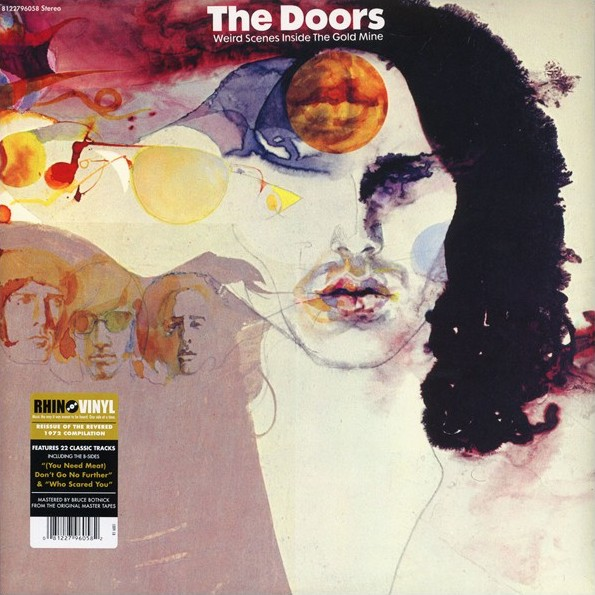
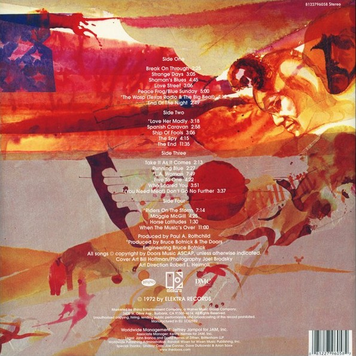

|  |
The Doors: Weird Scenes Inside The Gold Mine Rhino / Elektra reissues on LP and CD (April / May 2014) Especially for Record Store Day on April 19th 2014, the long out of print yet highly acclaimed compilation album "Weird Scenes Inside the Gold Mine" was re-released. Limited to 5.500 copies worldwide, the twin amber coloured vinyls look and sound better than ever before. "Weird Scenes" was originally released in January of 1972, in between the two Doors albums without Jim, exactly 5 years after the band's debut album had first seen the light of day. With a very cleverly picked tracklist this is by no means a 'best of' nor a 'greatest hits' compilation; the selection of songs goes much deeper than the traditional hits album concept. In fact it was the follow up to "13," the Doors' first compilation album from November 1970. "13" already had most of the hit songs, and none of its tracks were repeated on "Weird Scenes" - a wise decission, knowing that the initial release did well on the charts. Making it even more interesting for the record buying public at the time was the inclusion of two non album tracks, previously available only on singles. "Who Scared You" and "(You Need Meat) Don't Go No Further" were pretty much unheard of, and the album would remain the only longplay source for these songs for several decades to come. The former would finally surface on "The Doors Box Set" in 1997, but there was a problem: quality control had failed somehow and the song as presented was incomplete, a verse had gone missing in the mix. This was put straight two years later on "Essential Rarities," basically a 'best of the Box set with a bonus track.' It wasn't until 2006 when the Ray Manzarek sung "(You Need Meat) Don't Go No Further" found its way onto CD, as a bonus on the remastered "L.A. Woman" album, initially part of the "Perception" box set. Speaking of that, it's great to hear only original masters on the reissued "Weird Scenes." Not the remixes that appeared as Audio DVD's in "Perception" first, and later as the standard masters for the band's six album back catalogue - an entirely different subject, that! There are no extras though, not even any new liner notes to introduce the re-release; or, should we really moan about this? Here is "Weird Scenes" as it was intended to be, in its beautifully illustrated gatefold sleeve, a real pleasure to have and to hold... Exactly one month after the vinyl, on May 19th there was suddenly a version on CD. An odd record company move in these difficult times for physically published music... Still, the double CD may well serve as the perfect introduction to the Doors because so far, not a single generation has failed to discover the Doors, there's still teenagers out there wearing Jim Morrison t-shirts; they remind me so much of myself 25 odd years ago! Anyway: welcome back "Weird Scenes Inside the Gold Mine"! � Kevin Chiotis for the Doors Quarterly Magazine Online - Nov. 2014 |
|||
|  | ||||

|

|